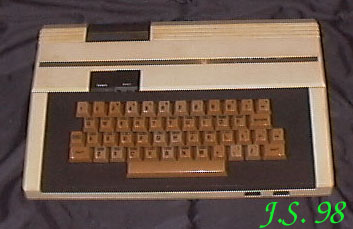

LASER 2001 Ten komputer jest prawdziwą rzadkością. Niestety, ma uszkodzony interfejs flopa (spalony ROM) i nigdzie nie mogę znaleźć posiadacza takiego kompletu. Wiem, że był rozprowadzany w Niemczech (ma niemiecką instrukcję). Ktokolwiek znałby szczęśliwego właściciela takiej maszynki, niech mnie zawiadomi...Procesor 6502 / 1,1MHz.RAM 32kB.ROM 20kB.Procesor graficzny - TMS9929.Rozdzielczość maksymalna 256 X 192Grafika 16 kolorówTekst 24 linie po 36 znaków.Porty: Printer-Bus, System-Bus, magnetofon.Zewnętrzne peryferia: magnetofon, drukarka, stacja dysków 5,25".Dźwięk: SN76489 trzykanałowy generator dźwięku + 1 kanał szumów. |